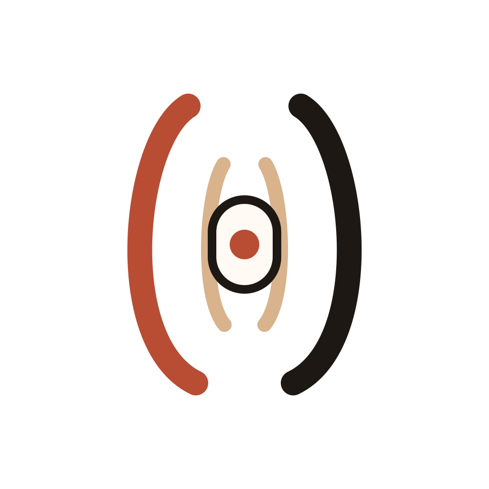
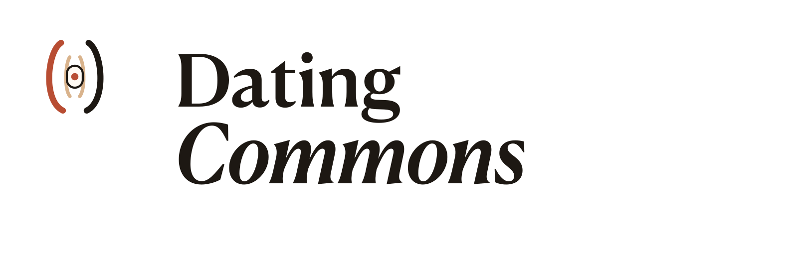

Symbol mark
The standalone symbol for compact placements, avatars, and badges.
Public brand kit
The Dating Commons is the foundation behind three initiatives: The Dating Institute, HeartFull, and the Offline Dating Movement. This page provides public-facing assets, descriptions, share copy, and basic usage guidance so supporters, collaborators, media, and volunteers can represent the work consistently.
Downloads

The standalone symbol for compact placements, avatars, and badges.
The name-only treatment for editorial, footer, and narrow horizontal placements.

The primary public logo for partner pages, press kits, and headers.
The most legible logo for posters, social tiles, and centered layouts.
Architecture
Foundation umbrella
A public-interest foundation working on better ways to meet through research, aligned products, and real-world social infrastructure.
Research initiative
Research, critique, and public-interest publishing on dating apps, market structure, privacy, pricing, and alternatives.
Visit The Dating InstituteProduct initiative
A free dating mobile app testing what happens when connection is no longer shaped by pay-to-win mechanics.
Visit HeartFullMovement initiative
Offline meetups, local chapters, and better in-person dating formats with warmer social design and stronger host standards.
See the first eventPalette
Type & tone
Usage
Copy Bank
A foundation for better ways to meet.
The Dating Commons is a public-interest foundation behind The Dating Institute, HeartFull, and the Offline Dating Movement.
The Dating Commons is a foundation building the public-interest layer around modern dating. It works through three initiatives: The Dating Institute for research, HeartFull for the free mobile app path, and the Offline Dating Movement for real-world meetups and chapter building.
Modern dating got enclosed by extraction, scarcity, and subscriptions. The Dating Commons is building the alternative through research, a free dating app path, and better offline events. Learn more at datingcommons.org.
{kind=link}
{kind=link}
{kind=link}
{kind=link}
{kind=link}
{kind=link}
{kind=link}
{kind=link}
{kind=link}
{kind=link}
{kind=link}
{kind=link}
{kind=link}
{kind=link}
{kind=link}
{kind=link}